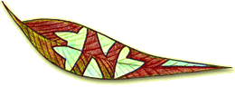

Eucalypt species selection for New Zealand's
environment requires an extensive understanding of the dynamics and
interaction of microclimate, pests/diseases and desired timber
properties.
Some eucalyptus species are highly susceptable to the suite
of pests and disease arrivals from Australia, but others are highly
resistant.
Eucalyptus species vary in their resistence to drought,
soil conditions, wind snow and frost.
With this in mind I am preparing an information resource to help with
species selection for plantation forestry in New Zealand. Watch this
space.